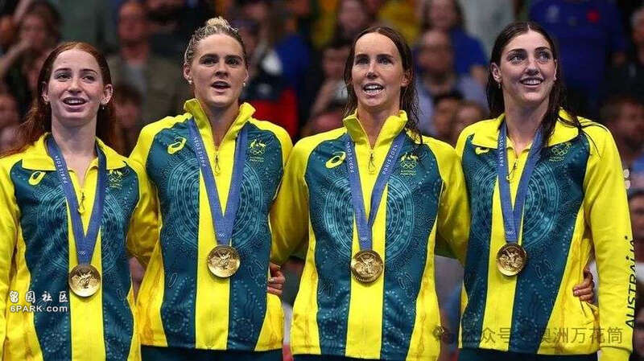
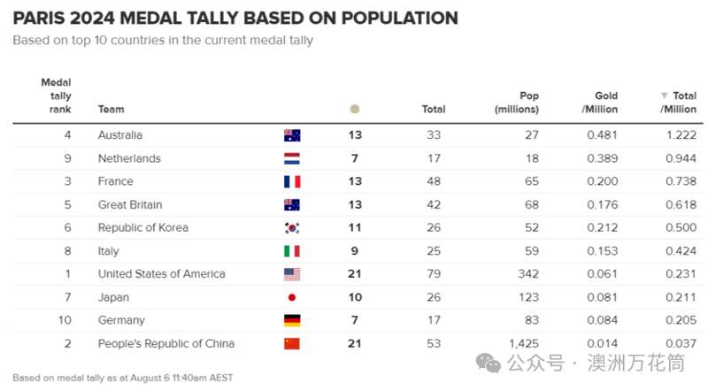
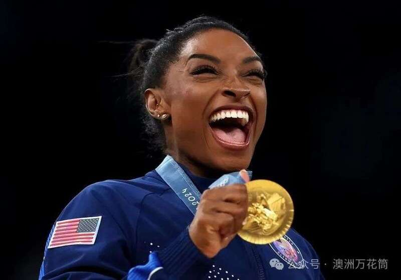
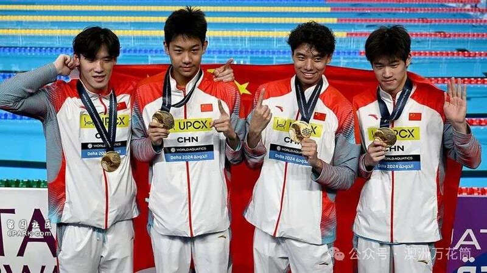

澳洲九号台新闻8月6日报道，在当前奥运奖牌榜排名前10的国家中，澳洲凭借人均奖牌数的表现，奠定了其“人均奥运最佳国家”的地位。
截至8月6日上午的撰稿时间，澳洲每百万人获得的奖牌数已超过一枚，是奖牌榜前10名中唯一做到这一点的国家。
具体来说，澳洲每百万人口获得了1.22枚奖牌，这几乎让其他所有国家望尘莫及。
不仅如此，澳洲在人均金牌数量方面也名列前茅，达到了每百万人口0.48枚。


紧随其后的是荷兰，每百万人口赢得了0.94枚奖牌。尽管荷兰获得了7枚金牌，而澳洲的13枚金牌数量几乎是荷兰的两倍，但澳洲的人口却只比荷兰多1000万。
东道国法国则排名第三，每500万人口得到一枚金牌。虽然法国的总奖牌数超越了澳洲，但由于人口是澳洲的两倍多，其人均奖牌数排名相对下降。
体育强国美国虽然在奖牌榜上名列前茅，但在人均奖牌数上却滑落到了第7位，每500万人口仅获得一枚奖牌。

而中国则排名最后，每2700万人口仅获一枚奖牌。（很明显，发明此排行榜的仁兄把人口最大国印度忘记了）
尽管中国运动员夺得了21枚金牌和总共53枚奖牌，但由于其14.2亿的庞大人口，导致人均奖牌数偏低。
要赶上澳洲的人均奖牌数，中国需要再赢得大约1375枚奖牌，这个数量任何一届奥运会上的总奖牌数还要多。

这个榜单仅统计了奖牌榜前10名的国家，目前新西兰则排名第12。
新西兰迄今为止已经为其520万公民赢得了3枚金牌。如果将新西兰包括在内，他们将以每百万人1.8枚奖牌的成绩超过澳洲。
此外，一些像圣卢西亚这样的小国在人均成绩上也表现出色。
该国人口只有17.9万人，但由于运动员Julien Alfred在周六赢得了该国历史上的首枚奥运奖牌，从技术上讲，他们每百万人拥有的金牌数达到了非同寻常的5枚。